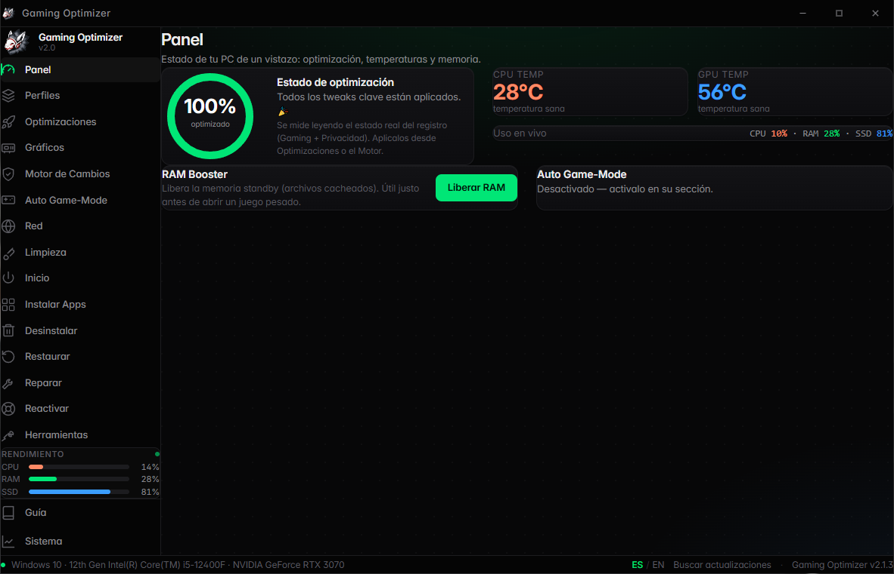
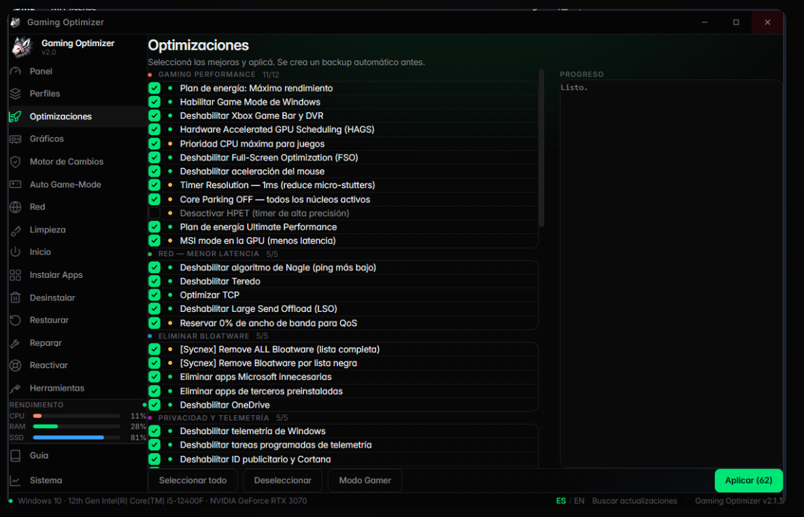
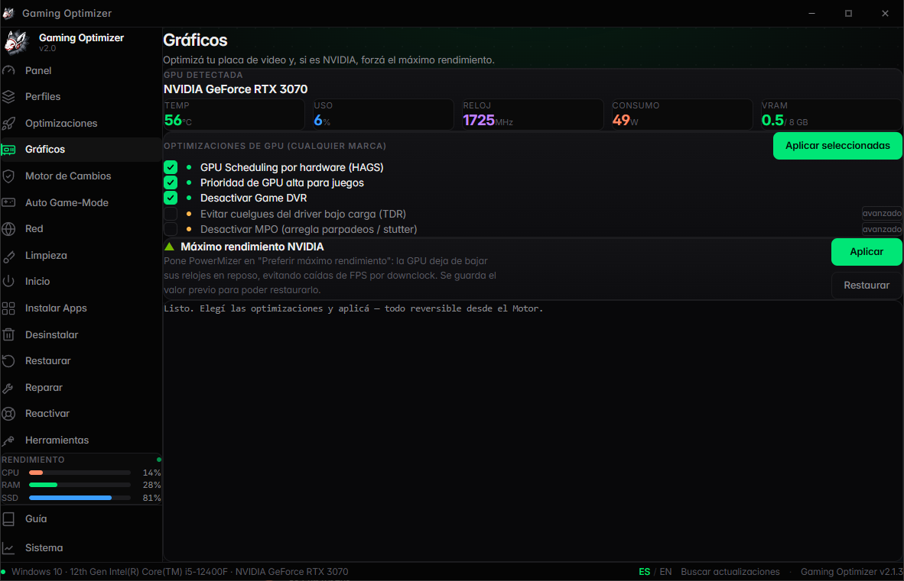
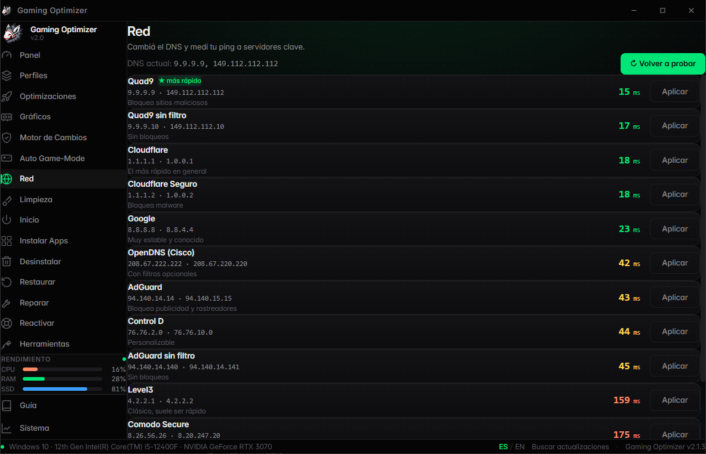
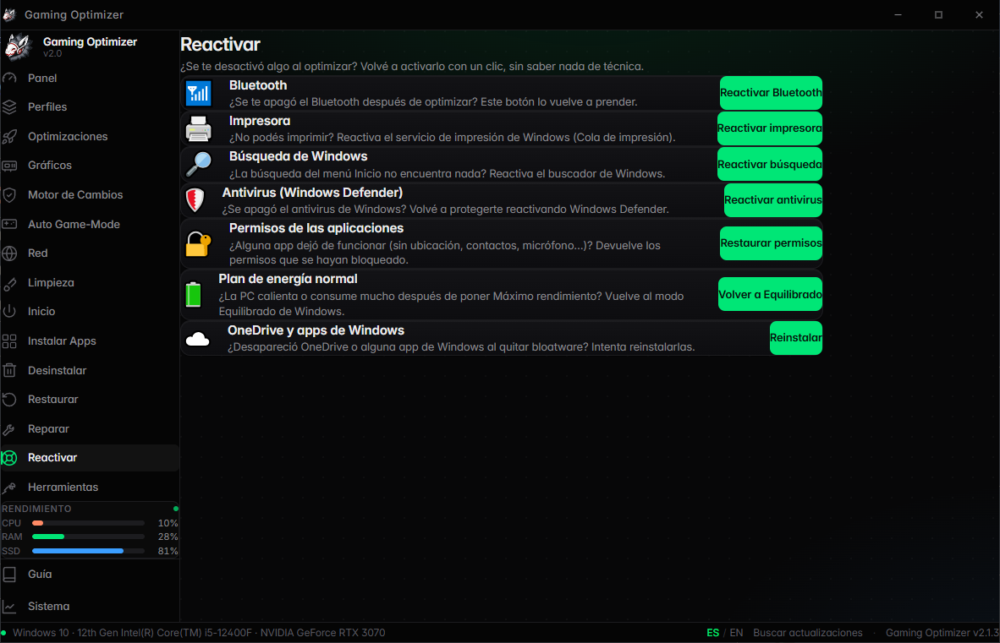

Optimizador de Windows para gaming: rápido, reversible y con un diseño minimalista. Aplica mejoras de rendimiento con un clic — y deshacé cualquier cambio cuando quieras.
Windows 10 · 11 (x64) — ~5 MB — se auto-actualiza solo

Cada herramienta que necesitás para exprimir tu PC — con backups automáticos y un motor que deshace cambios uno por uno.
Sin menús confusos ni publicidad. Hacé clic en cualquier captura para ampliarla.




Bajá el instalador desde GitHub Releases. Sin registro, sin pagos, sin trucos.
⬇ Descargar para Windows